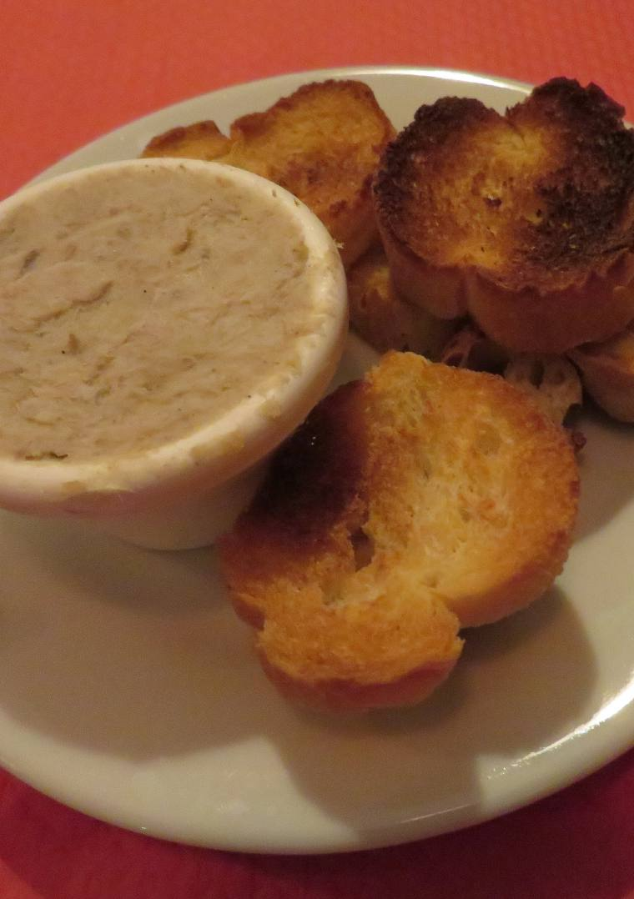

Charcuterie maison

Charcuterie maison
Rillettes façon Tours
Préparation : 45 min
Cuisson : 7 h
Ingrédients (pour 2 kg de viande et de gras)
- 500 g de jambon frais ou carré de filet
- 900 g d’épaule de porc
- 600 g de gras dur de porc
- 26 g de sel fin non nitrité
- 2 g de poivre
- 30 g de vin blanc (vouvray)
Quantités adaptées. Les temps de cuisson ne sont pas recalculés.
- Couper la viande en morceaux d’au moins 6 cm. Hacher uniquement le gras.
- Faire fondre le gras dans une marmite large, puis y rissoler la viande entre 95 et 115 °C, de 15 minutes à 1 heure, en remuant.
- Saler, poivrer, mouiller au vin. Cuire à découvert vers 90 °C pendant 6 heures, en remuant sans broyer les fibres.
- Donner un coup de feu final de 10 à 20 minutes entre 95 et 115 °C.
- Laisser reposer 10 à 20 minutes, retirer l’excédent de graisse jusqu’à voir affleurer les fibres.
- Mouler au-dessus de 65 °C dans des pots propres et chauds, couvrir de graisse et refroidir rapidement jusqu’à 4 °C.
À conserver au froid, jamais au placard
Au réfrigérateur entre 0 et 4 °C : 5 jours au plus. Au congélateur à −18 °C, dès le refroidissement : 2 mois au plus. La couche de graisse ne stérilise rien.
Les règles des bocaux
D’après le cahier des charges de l’IGP Rillettes de Tours, INAO. Proportions choisies dans les fourchettes autorisées (sel 5 à 20 g/kg). Durée de conservation réduite pour la maison.